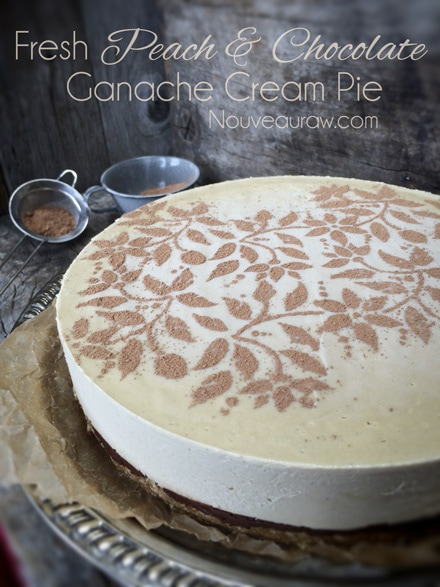
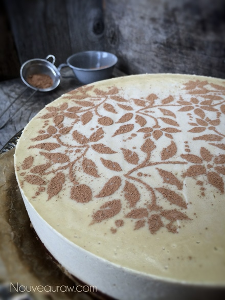

Fresh Peach and Chocolate Ganache Cream Pie

~ raw, vegan, gluten-free ~
To make the best possible tasting peach cream pie, it must start with the perfect peach. Did you know that there are over 2,000 varieties of peaches? There is a favorite peach taste for everybody.
I only thought one peach existed… you know, the one that was in the grocery store… I may have eaten many different varieties throughout my life but I didn’t know the difference. As long as it was sweet and juicy, I was a happy camper.
So back to what I first mentioned… the key to this pie is starting with the best peach possible. If the peach is flavorless, the pie will be as well. To find the best peach, start by taking a whiff, a ripe peach should be sweetly fragrant. Now that you have a sweet-smelling peach, it’s time to give it a gentle squeeze.
A ripe peach shouldn’t be too hard, it should be soft to the squeeze. Never judge a peach by its cover. As far as color goes, the color of a peach tells us more about what variety it is rather than its ripeness. So never assume that the best peach has to have a peachy color, it could be more white or even greenish-white.
The color… this is what trips me up sometimes about creating raw food recipes. When I make a key-lime pie, I expect it to be green. I forget that commercially processed key-lime pies are enhanced with artificial coloring when in reality a true key-lime pie is cream in color. So when I made my peach pie, I wanted (or expected) it to be a peach color… instead I got another cream-colored pie. Funny how used to artificial coloring we can become.
Learning to enjoy fruits and veggies in their prime has been one of the greatest joys of my journey with raw foods. So… all this to say… taste test those peaches before you commit to making this pie. If they are bland, today isn’t the day to make this pie. If the peaches are sweet and the juices run down your arm and soak your sleeve… hallelujah! It’s a peach pie making day! My goal is to help you achieve success in the kitchen so please take my advice to heart. :)
 Ingredients:
Ingredients:
Yields one 9 1/2″ Springform pan
Crust:
Chocolate ganache layer:
- 3/4 cup maple syrup
- 3/4 cup raw cacao powder
- 1/3 cup cold-pressed coconut oil, melted
- 1/8 tsp sea salt
Peach filling:
- 3 cups raw cashews, soaked 2 + hours
- 3/4 cup maple syrup
- 2 cups peach puree (took 3 peaches)
- 1/4 cup fresh orange juice
- 1 Tbsp vanilla extract
- 1/2 tsp liquid stevia
- 1/4 tsp sea salt
- 1 cup raw cold-pressed coconut oil (see #2)
- 3 Tbsp sunflower lecithin powder
Preparation:
Crust:
- In the food processor, fitted with the “S” blade, combine the coconut flakes, lucuma, and salt. Process until it resembles flour.
- Add the date paste and vanilla and continue processing until the batter sticks together when pressed.
- Line the base of the Springform pan with plastic wrap and press the crust batter into the base nice and even. Set aside.
Ganache:
- In a high-power blender combine the maple syrup, cacao, oil, and salt. Blend until completely smooth.
- Pour over the crust and spread it out evenly. Set in the freezer while you make the filling.
Filling:
- In a high-speed blender, combine the cashews, maple syrup, peach puree, orange juice, vanilla, stevia, and salt. Blend until the batter is smooth. Test this by rubbing the batter between your forefinger and thumb. If you feel any grit, continue the process. This can take up to 5 minutes.
- With a vortex going in the blender add the coconut oil, then the lecithin, and blend just until combined.
- Pour the filling into the Springform pan. Gently tap the pan on the counter to bring up any air bubbles.
- Chill overnight in the fridge. This can also be made ahead of time and frozen.
- Optional: for decoration, I laid a stencil on top of the pie and lightly dusted it with raw cacao powder.
- Keep in the fridge until ready to serve. Should last 3-5 days.
Tips:
- It is important to soak your cashews for at least 2 hours. This helps to soften them, assuring you a much smoother texture.
- The reason for adding the oil and lecithin at the end is because you don’t want to over-process the coconut oil, causing separation, and the lecithin is a thickener, so you want to make sure that you have the texture right where you want it before adding it in.

© AmieSue.com